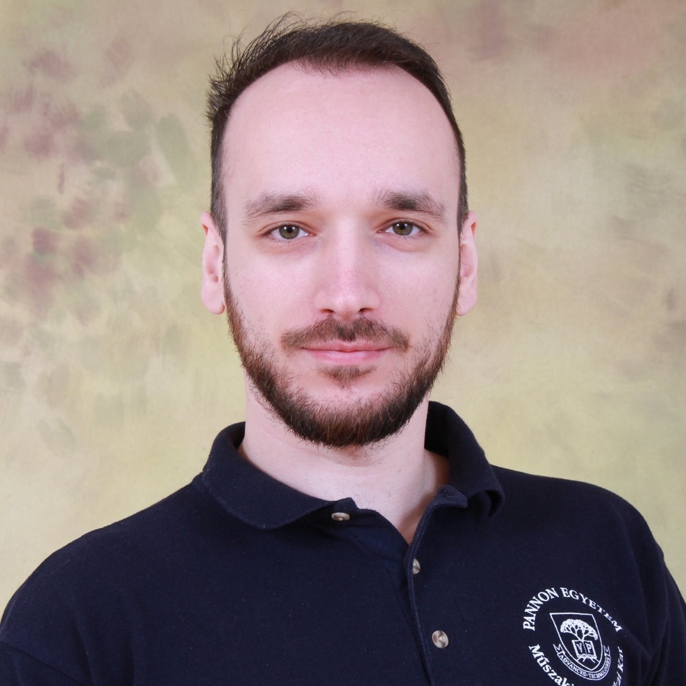

"Science isn't about why, it's about why not!"— Cave Johnson · Portal 2
Video games have held me captive since I was a kid. I made up my mind early that I'd work with them professionally — and I did.
I'm an Associate Professor at the Faculty of Information Technology, University of Pannonia (Veszprém, Hungary), where I earned my PhD in Information Science in 2021.
My research sits at the intersection of game studies, human-computer interaction, and data science. On the games side I analyze large-scale player behavior and review data — 36M+ Steam reviews, Soulslike mechanics, toxicity patterns, progression systems, and VR cybersickness. On the HCI side I develop and evaluate tools for assessing spatial ability in virtual reality.
At BSc/MSc level I teach courses in Data Science, Data Mining, Programming, Multimedia, Computer Game Design & Development, Virtual Reality, and related subjects. At PhD level: Game Mechanics & Intelligent Systems in Digital Game Development and LLM-Based Interactions in XR Environments. Currently co-supervising 3 PhD students; have supervised 54 graduated students and 9 TDK participants.
I serve on the organizing and program committees of multiple IEEE conferences and am a member of the Virtual Environments and Applied Multimedia Research Laboratory. I've been an IEEE member since 2023.
Gyerekkoromtól lekötöttek a videojátékok. Hamar eldöntöttem, hogy ezzel akarok foglalkozni professzionálisan — és sikerült.
Egyetemi docens vagyok a Pannon Egyetem Műszaki Informatikai Karán (Veszprém), ahol 2021-ben szereztem a PhD fokozatom az informatikai tudományokból.
Kutatásaim a játéktudomány, az ember-számítógép interakció és az adattudomány metszéspontján helyezkednek el. Játékok oldalán nagy adathalmazokat elemzek — 36M+ Steam értékelés, Soulslike mechanikák, toxicitásminták, progressziós rendszerek, VR cybersickness. HCI oldalán virtuális valóságban mért térbeli képességeket vizsgálok.
Oktatott tárgyaim BSc/MSc szinten: Adattudomány, Adatbányászat, Programozás, Multimédia, Számítógépes játéktervezés és -fejlesztés, Virtuális valóság és kapcsolódó tárgyak. PhD szinten: Játékmechanikák és intelligens rendszerek a digitális játékfejlesztésben és LLM-alapú interakciók XR környezetben. Jelenleg 3 PhD hallgató társtémavezetője vagyok; eddig 54 végzett hallgatóm és 9 TDK-zó hallgatóm volt.
Több IEEE konferencia szervező- és programbizottságának tagja vagyok, és a Virtuális Környezetek és Alkalmazott Multimédia Kutatólaboratórium tagja. IEEE tagvagyok 2023 óta.

There's more to a researcher than their h-index. A few things that make me actually interesting: Egy kutatónál több van, mint az h-indexe. Néhány dolog, ami valóban érdekessé tesz:
Loading publications…
Available for research collaborations, conference contributions, book chapter invitations, special issue proposals, and general academic mischief. Response may take a few days.
Kutatási együttműködések, konferenciabeküldések, könyvfejezet-meghívások, különszám-javaslatok és egyéb tudományos kalandok ügyében kereshetsz. Válasz néhány napon belül.
guzsvinecz.tibor [at]University of Pannonia · Faculty of Information Technology · Veszprém
P.S. Include a joke in your email — at least I'll know you're not a bot. 🤖
Pannon Egyetem · Műszaki Informatikai Kar · Veszprém
U.i. Írj egy viccet az e-mailbe — legalább tudom, hogy nem spam. 🤖